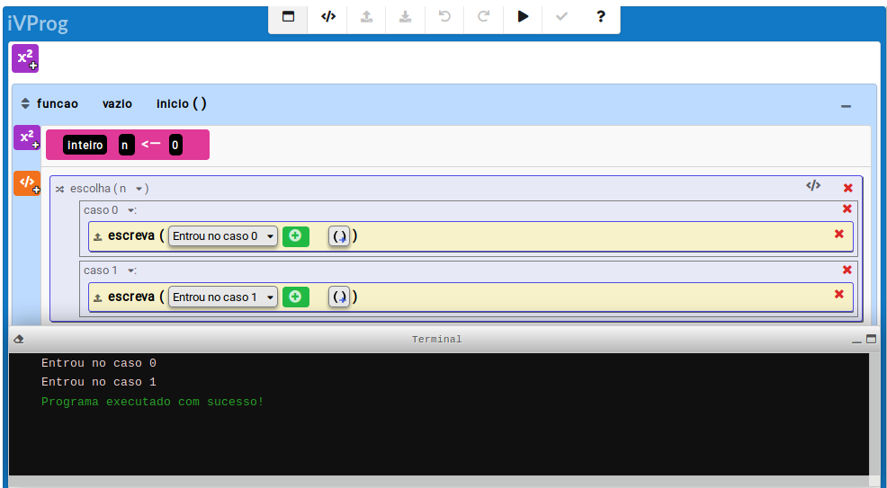

)")
Caso
Esse comando contextual é utilizado para definir os casos que devem ser analisados pelo programa dentro de uma estrutura de múltipla escolha. Note que sem um comando pare a execução ocorre em cascata a partir do primeiro caso verdadeiro. No exemplo abaixo, ambas as mensagens são exibidas.

Fig. 1. Exemplo de uso do 'escolha-caso'.
Fig. 1. Exemplo de uso do 'escolha-caso'.